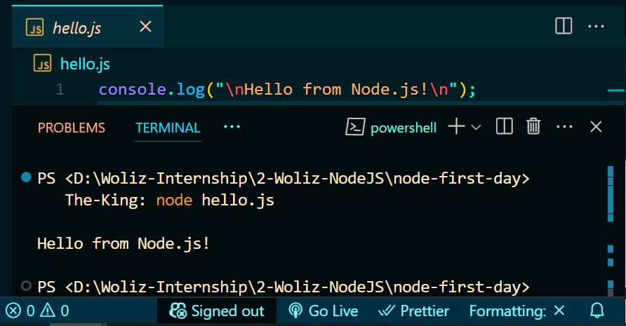
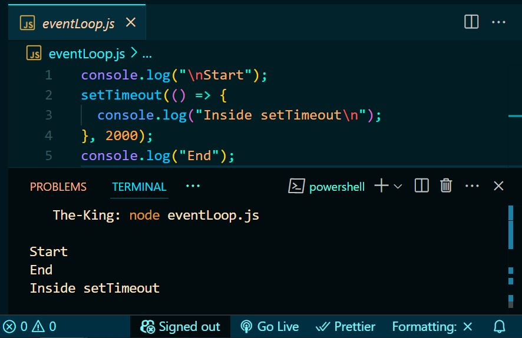
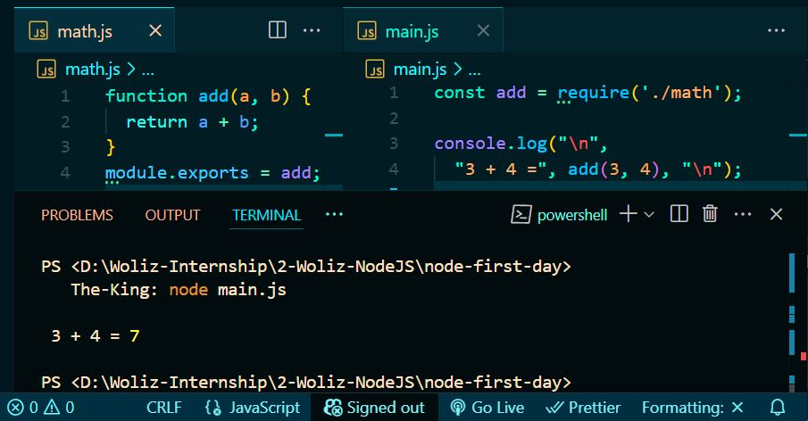
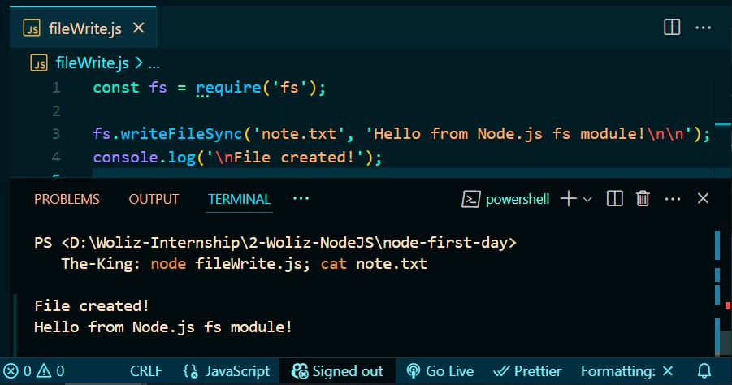
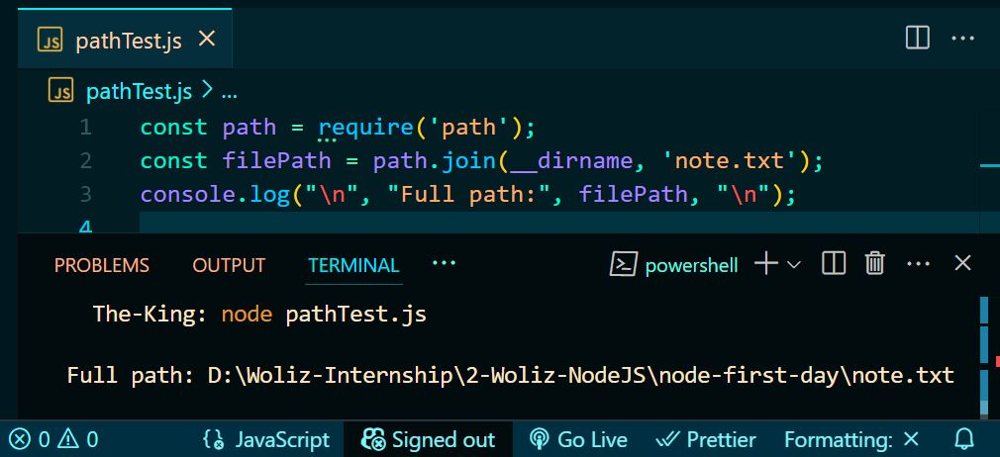
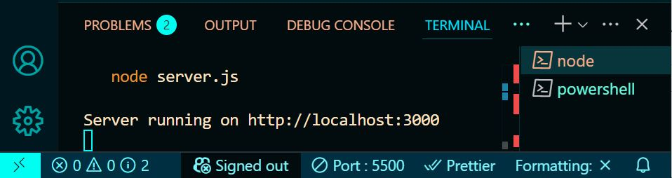
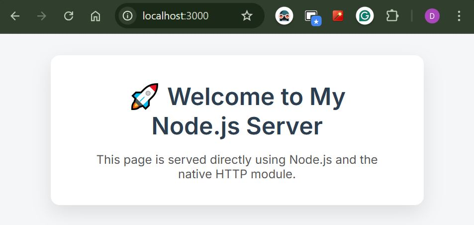
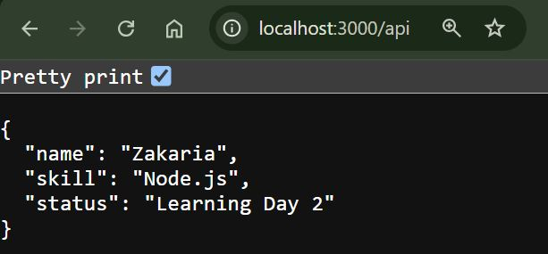
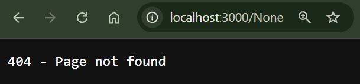

This report documents my Node.js learning journey from basic scripting to backend
development principles.
📅 June 10, 2025 — Node.js Environment & Modules
✅ Accomplishments
Node.js was already installed on my machine because Vue CLI depends on it.
I verified the installation using the terminal: node -v → v22.16.0 npm -v → 10.9.2
Environment is ready for backend development.
Created a working folder: node-first-day and opened it in VS Code.
Ran first script using node hello.js — printed "Hello from Node.js!".
Practiced understanding Node.js event loop with setTimeout example.
Created and used a CommonJS module using require() to import math.js.
Used the built-in fs module to create a file called note.txt.
Used the built-in path module to get the full absolute path of a file.
📂 Practice Folder Setup
mkdir node-first-day
cd node-first-day
code .
📄 First Script
This shows the terminal output of my very first Node.js script, hello.js, which prints "Hello from
Node.js!" to confirm the runtime is working.

🔁 Event Loop Example
This example demonstrates how the Node.js event loop works. The output proves that asynchronous code like
setTimeout is executed after synchronous code.

📦 CommonJS Module Example
I created a math.js file that exports basic operations. Then I imported it using
require() in another script. This shows how CommonJS modules work in Node.js.

📂 File System Module (fs)
I used the built-in fs module to write a file called note.txt. This output shows that
the file was successfully created with the desired content.

🧭 Path Module Example
This image shows the use of the path module to construct and display the absolute path of a file,
helping with dynamic file handling in Node.js.

🧠 Key Learnings
I now understand how Node.js runs JavaScript code outside the browser using its own runtime.
The event loop helped me realize how asynchronous operations are handled.
I also practiced modular code using CommonJS syntax and saw how built-in modules like fs and
path can interact with the system directly.
📅 June 11, 2025 — HTTP Server and Routing (Node.js Core)
✅ Accomplishments
Created a basic HTTP server using Node’s built-in http module.
Served a static HTML file (index.html) from a public folder using fs.
Handled basic routing for /, /home, and /api endpoints.
Sent a JSON response with user data at /api route using
res.end(JSON.stringify(...)).
Tested 404 responses when an unknown route is visited.
Organized the project folder: separated HTML, logic, and made it easy to scale later with Fastify.
Terminal showing server running on localhost:3000 using http.createServer().

📄 index.html Served
Node.js served this simple HTML file using the fs module.

📦 JSON Response at /api
This shows the browser displaying the JSON response from /api.

❌ 404 Route Handling
Visiting an unknown route returns a custom plain text 404 response.

🧠 Key Learnings
I now understand how Node.js can create a server from scratch using the http module.
I practiced routing logic and learned how to serve both HTML content and JSON responses.
This is the foundation for building REST APIs and serving data to the Vue frontend.
🔜 What’s Next (Day 3 Preview)
Tomorrow we will upgrade to Fastify to simplify server code, handle middleware, and support
POST requests,
preparing for user login and registration features.
📅 June 12, 2025 — Fastify Setup, Routes, and POST Handling
✅ Accomplishments
Installed Fastify using npm install fastify.
Created a Fastify server in server.js with a basic route / that returns a welcome
message.
Added a new route /about that returns a JSON object.
Handled a POST request at /login route with Fastify body parsing enabled.
Tested API endpoints using browser for GET and PowerShell Invoke-RestMethod for POST requests.
Restructured project folders for clarity (added routes and controllers directories).
Today I learned how to use Fastify as a modern alternative to the native http module. It provides an
easier syntax, built-in body parsing, and cleaner routing. Fastify helped me structure my server code better and
prepare for more advanced backend features like middleware and authentication.
🔜 What’s Next (Day 4 Preview)
Tomorrow, I will begin transforming my Vue-only quiz app — which I built fully on the frontend
using just Vue.js — into a secure, professional full-stack web app by:
Vue = Frontend Only
I already built all quiz pages, logic, and design using Vue, including:
User interface
Quiz questions and answers
Navigation between components
Score calculations
Fastify + Node.js = Backend
Now I’ll start adding a real backend using Fastify to handle:
Authentication (Login/Register)
- Accept user inputs
- Hash passwords using bcrypt
- Issue JWT tokens on login
- Store and validate sessions securely
Routing & APIs
- Dynamic routes like /api/quiz/:id
- POST /api/submit/:quizId for answers
- Use fastify-cors, fastify-formbody, fastify-jwt, etc.
Database Setup (SQLite)
- users table for auth
- quizzes, questions, answers, scores tables
- SQLite for lightweight, easy-to-manage dev database
Tested complete user journey: register, login, fetch quizzes, take quiz, and view results.
🧠 Key Learnings
I learned how to handle form submissions securely using Fastify, hash and store passwords with bcrypt, and issue
tokens using JWT.
I also practiced connecting a Vue 3 frontend to a Fastify backend using fetch, and managing login sessions via
localStorage.
Additionally, I implemented dynamic quiz and question fetching using Fastify and JSON data files. I learned how to
structure API endpoints that return filtered data, how to replace hardcoded frontend logic with real API calls,
and how to manage quiz flow with dynamic Vue routing and state. This brought the project much closer to a
real-world architecture.
🔜 What’s Next (Day 5 Preview)
Since I’ve been using .json files for all my data so far, tomorrow I plan to begin the transition to
a proper database setup with SQLite. Here’s what’s next:
🔐 Add token-based protection to quiz-related routes (e.g., using middleware)
🛠️ Improve frontend UX and handle fetch errors more gracefully
🗃️ Set up SQLite for persistent data storage
⚙️ Install and configure sqlite3 or better-sqlite3 package
📁 Create database schema with the following tables:
users — for storing emails and hashed passwords
quizzes, questions, answers, and scores
🔄 Refactor /register and /login to use SQLite instead of JSON
📡 Dynamically fetch quizzes and questions from the database